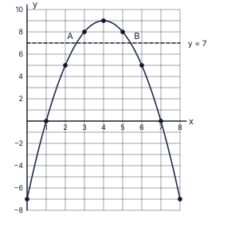
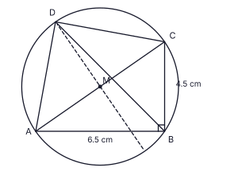
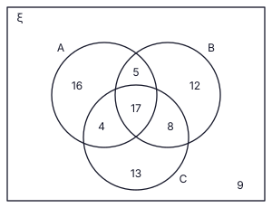

| (i) | |
| Interest = 60 000 × 18100 × 1012 | 1 |
| = Rs 9 000 | 1 |
| (ii) | |
| Total paid = 6 550 × 10 = Rs 65 500 | 1 |
| Total interest = 65 500 − 60 000 = Rs 5 500 | 1 |
| (iii) | |
| Balance owed at the start of each month: Rs 60 000, 54 000, 48 000, 42 000, 36 000, 30 000, 24 000, 18 000, 12 000, 6 000 (the repaid capital is 60 000 ÷ 10 = Rs 6 000 per month) | 2 |
| Sum of the monthly balances = 6 000 × (10 + 9 + … + 1) = 6 000 × 55 = Rs 330 000 (rupee-months) | 1 |
| Let the annual rate be r %: 5 500 = 330 000 × r100 × 112 | 1 |
| r = 20 % | 1 |
| Option 1 rate = 18 % and 20 % > 18 %, so the annual interest rate under Option 2 is higher (although its interest, Rs 5 500, is less than Rs 9 000) | 1 |
Total marks: 10

| (i) | |
| The axis of symmetry is x = 4 (y = 5 at x = 2 and x = 6); the point x = 5 matches x = 3, so y = 8 | 1 |
| (ii) | |
| Suitable scale marked on both axes (2 cm per unit on x; 2 cm per 2 units on y) | 1 |
| All nine points (0, −7), (1, 0), (2, 5), (3, 8), (4, 9), (5, 8), (6, 5), (7, 0), (8, −7) plotted (8 or 9 correct: 1 mark; fewer: 0) | 1 |
| Smooth curve (an inverted U-shape) through the points, with maximum at (4, 9), see figure | 1 |
| (iii) | |
| (a) x = 1 and x = 7 | 1 |
| (b) y = −(x − 1)(x − 7) (p = −1, q = −7) | 1 |
| (iv) | |
| Line y = 7 drawn; it meets the curve at A (≈ 2.6, 7) and B (≈ 5.4, 7) | 1 |
| (a) 2.6 < x < 5.4 (accept 2.5–2.7 and 5.3–5.5) | 1 |
| (b) AB = 5.4 − 2.6 | 1 |
| = 2.8 units (accept 2.7 – 2.9; exact value 2√2 ≈ 2.83) | 1 |
Total marks: 10
| (i) | |
| In triangle ABC (∠B = 90°): BC = AC sin 35° = 40 × 0.5736 | 1 |
| = 22.94 m | 1 |
| (ii) | |
| BD = 2 × BC = 2 × 22.94 = 45.88 m (since DC = BC) | 1 |
| (iii) | |
| tan ∠DEB = BDBE | 1 |
| = 45.8836 = 1.2744 | 1 |
| From the tangent table: tan 51°48′ = 1.2708 and tan 51°54′ = 1.2753; 1.2744 lies between them (difference 0.0036 from 1.2708, i.e. about 5′) | 1 |
| ∠DEB = 51°53′ (accept 51°52′ – 51°54′) | 1 |
| (iv) | |
| Inclination of DE = ∠DEB = 51°53′ ; inclination of AC = ∠CAB = 35° | 1 |
| Difference = 51°53′ − 35° = 16°53′ | 1 |
| 16°53′ > 16°, so the inclination of DE exceeds that of AC by more than 16° | 1 |
Total marks: 10
| (i) | |
| Area of the rectangle = (2x + 2)(x + 1) = 2x2 + 4x + 2 ; area of the pond = (x − 1)2 = x2 − 2x + 1 | 1 |
| 2x2 + 4x + 2 − (x2 − 2x + 1) = 100 ⇒ x2 + 6x + 1 = 100 ⇒ x2 + 6x − 99 = 0 | 1 |
| x = −6 ± √(36 + 396)2 = −6 ± √4322 (formula with a = 1, b = 6, c = −99) | 1 |
| √432 = 12√3, so x = −3 ± 6√3 ; reject the negative root | 1 |
| x = −3 + 6 × 1.73 = 7.38 ≈ 7 m | 1 |
| (ii) | |
| Side of the pond = x − 1 = 6 m | 1 |
| Diagonal = √(62 + 62) = 6√2 | 1 |
| = 6 × 1.41 = 8.46 m | 2 |
| 8.46 > 8, so the diagonal is longer than 8 m | 1 |
Total marks: 10
| (i) | |
| x + y = 80 ……① | 1 |
| 95x + 150y = 9 250 (÷ 5: 19x + 30y = 1 850) ……② | 1 |
| From ①, x = 80 − y; substituting in ②: 19(80 − y) + 30y = 1 850 | 1 |
| 1 520 + 11y = 1 850 ⇒ 11y = 330 ⇒ y = 30 | 1 |
| x = 50 : 50 small packs and 30 large packs | 1 |
| (ii) | |
| 24.5 kg = 24 500 g | 1 |
| Let a small pack contain m g; a large pack contains (m + 150) g | 1 |
| 50m + 30(m + 150) = 24 500 | 1 |
| 80m + 4 500 = 24 500 ⇒ 80m = 20 000 | 1 |
| m = 250 g | 1 |
Total marks: 10
| Class | Mid-value x | Frequency f | fx |
|---|---|---|---|
| 15–24 | 19.5 | 4 | 78 |
| 25–34 | 29.5 | 9 | 265.5 |
| 35–44 | 39.5 | 14 | 553 |
| 45–54 | 49.5 | 9 | 445.5 |
| 55–64 | 59.5 | 4 | 238 |
| 40 | 1 580 |
| (i) | |
| Mid-values 19.5, 29.5, 39.5, 49.5, 59.5 and products fx (see table) | 1 |
| Σf = 40 and Σfx = 1 580 | 1 |
| Mean = 1 58040 = 39.5 patients per day | 1 |
| (ii) | |
| Expected number = 39.5 × 30 | 1 |
| = 1 185 patients | 1 |
| (iii) | |
| Expected patients in 20 days = 39.5 × 20 = 790 | 1 |
| Total fees = 790 × 250 = Rs 197 500 | 1 |
| Hospital's share = 40100 × 197 500 = Rs 79 000 | 1 |
| (iv) | |
| Fewer than 35: classes 15–24 (4 days) and 25–34 (9 days); minimum when each day has the smallest value in its class (15 and 25) | 1 |
| Minimum total = 4 × 15 + 9 × 25 = 60 + 225 = 285 patients | 1 |
Total marks: 10

| (i) | |
| AB = 6.5 cm drawn accurately (± 1 mm) | 1 |
| Perpendicular at B constructed with compass (arcs visible), ∠ABC = 90° | 1 |
| C marked with BC = 4.5 cm (± 1 mm); AC joined (AC ≈ 7.9 cm) | 1 |
| (ii) | |
| Arcs of equal radius from A and from C on both sides of AC | 1 |
| Perpendicular bisector drawn; it meets AC at its midpoint M (≈ 3.95 cm from A) | 1 |
| Circle with centre M and radius MA (≈ 3.95 cm) drawn; it passes through A, B and C | 1 |
| (iii) | |
| Bisector of ∠ABC constructed (45° each side, arcs visible) | 1 |
| D marked on the circle (BD meets the circle again); AD and CD joined. AD = CD ≈ 5.6 cm (5.5 – 5.7 accepted) | 1 |
| (iv) | |
| ∠ADC = 90° (angle in a semicircle, AC is a diameter) | 1 |
| ∠DAC = ∠DBC = 45° (angles in the same segment; BD bisects the right angle ABC) | 1 |
Total marks: 10
| (i) | |
| In triangles BGE and CFE: ∠GBE = ∠FCE (alternate angles, AG ∥ DC) | 1 |
| BE = EC (E is the midpoint of BC) | 1 |
| ∠BEG = ∠CEF (vertically opposite angles); therefore △BGE ≅ △CFE (angle, side, angle) | 1 |
| (ii) | |
| From the congruence, GE = EF and BE = EC, so the diagonals BC and GF of the quadrilateral BGCF bisect each other at E | 1 |
| Therefore BGCF is a parallelogram. (Alternatively: BG = CF and BG ∥ CF.) | 1 |
| (iii) | |
| In triangles DFH and BGE: ∠HDF = ∠HAB (corresponding angles, DC ∥ AB) = ∠EBG (corresponding angles, AH ∥ BC) | 1 |
| ∠DFH = ∠BGE (alternate angles, DC ∥ AG); the third angles are equal too, so the triangles are equiangular | 1 |
| (iv) | |
| Similar triangles: DHBE = DFBG | 1 |
| BG = CF = DC − DF = 56 DC ; DF = 16 DC ; BE = 12 BC = 12 AD | 1 |
| DH = 12 AD × (1/6) DC(5/6) DC = 12 AD × 15 = 110 AD | 1 |
Total marks: 10
| (i) | |
| Volume of a pyramid = 13 × (3a)2 × 2a = 6a3 | 1 |
| Volume of 4 pyramids = 24a3 | 1 |
| Volume of the cylinder = πr2 × 8r = 8πr3 | 1 |
| 24a3 = 8πr3 ⇒ a3 = π3 r3 | 1 |
| (ii) | |
| lg a3 = lg 3.14 + 3 lg 14.5 − lg 3 = 0.4969 + 3 × 1.1614 − 0.4771 | 1 |
| = 0.4969 + 3.4842 − 0.4771 = 3.5040 ⇒ a3 = 3 191 (accept 3 190 – 3 192) | 1 |
| lg a = 3.5040 ÷ 3 = 1.1680 ⇒ a = 14.72 ≈ 15 cm | 1 |
| (iii) | |
| Volume of the cuboid = 3a × 3a × 2a = 18a3 ; volume cut out = 6a3 | 1 |
| Remaining volume = 12a3 | 1 |
| = 12 × 3 191 = 38 292 cm3 (accept 38 280 – 38 304) | 1 |
Total marks: 10
| (i) | |
| 120, 130, 140 (m2) | 1 |
| (ii) | |
| T12 = a + 11d = 120 + 11 × 10 | 1 |
| = 230 m2 | 1 |
| (iii) | |
| S12 = 122 (120 + 230) | 1 |
| = 2 100 m2 | 1 |
| (iv) | |
| S14 = 142 (2a + 13 × 20) = 2 100 | 1 |
| 2a + 260 = 300 | 1 |
| a = 20 m2 | 1 |
| (v) | |
| Day n: 120 + (n − 1) × 10 = 20 + (n − 1) × 20 | 1 |
| 110 + 10n = 20n ⇒ n = 11 : the 11th day (both transplant 220 m2) | 1 |
Total marks: 10
| (i) | |
| TA ⟂ OA and TB ⟂ OB (a tangent is perpendicular to the radius at the point of contact): ∠TAO = ∠TBO = 90° | 1 |
| ∠TAO + ∠TBO = 180° (opposite angles of TAOB) | 1 |
| Therefore TAOB is a cyclic quadrilateral (opposite angles supplementary) | 1 |
| In triangles TAO and TBO: ∠TAO = ∠TBO = 90°, OA = OB (radii), OT common (RHS) | 1 |
| △TAO ≅ △TBO, so ∠AOT = ∠BOT: OT bisects ∠AOB (also TA = TB) | 1 |
| (ii) | |
| (a) ∠TBA = ∠TAB, because TA = TB (tangents from T; shown by the congruence in (i)), so triangle TAB is isosceles | 1 |
| (b) ∠ADB = ∠TAB (angle in the alternate segment: tangent TA, chord AB) | 2 |
| (c) ∠AOB = 2∠ADB (angle at the centre is twice the angle at the circumference) | 1 |
| OT bisects ∠AOB, so ∠AOT = 12∠AOB = ∠ADB = ∠TAB | 1 |
Total marks: 10

| (i) | |
| Farmers who grew at least one crop = 84 − 9 = 75 | 1 |
| Two or more crops: 34 | 1 |
| Exactly one crop = 75 − 34 = 41 | 1 |
| (ii) | |
| Let the number who grew all three = t; exactly two = t | 1 |
| t + t = 34 | 1 |
| t = 17 | 1 |
| (iii) | |
| Exactly two = 17: 5 (paddy and maize only) + p + 2p = 17 ⇒ 3p = 12 ⇒ p = 4 | 1 |
| Paddy and vegetables only = 4 ; maize and vegetables only = 8 | 1 |
| (iv) | |
| n(A) = only paddy + 5 + 4 + 17 = 42 | 1 |
| Only paddy = 42 − 26 = 16 (only maize + only vegetables = 41 − 16 = 25; the data do not separate them, so the figure shows 12 and 13 for illustration) | 1 |
Total marks: 10